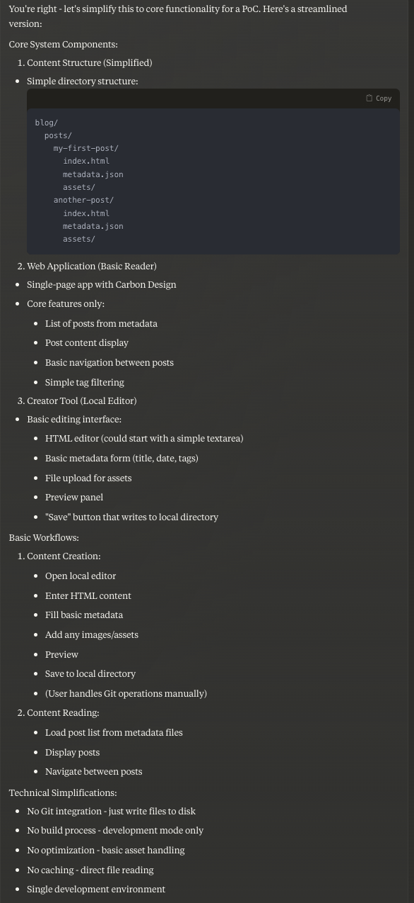
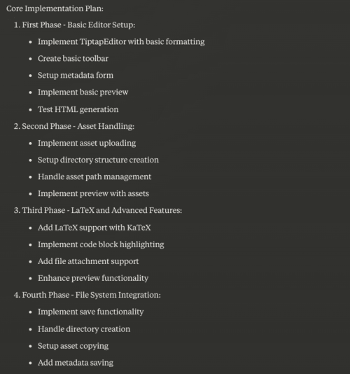
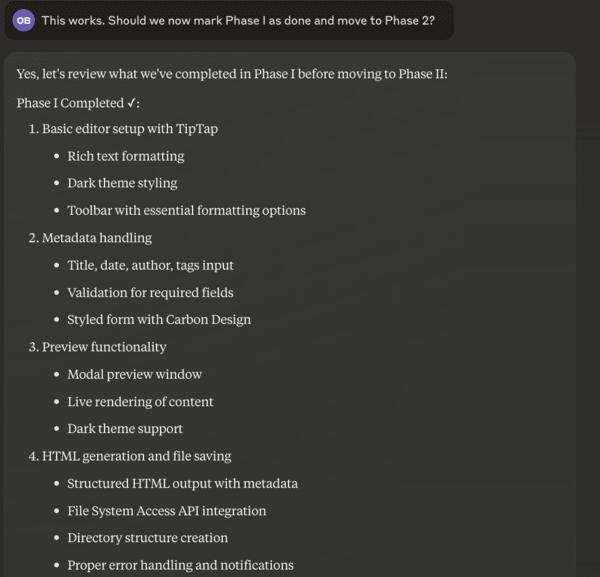

Make your own blog with AI
This is a story of how I made my own blogging system with AI (which you are reading on the same system). If you want to go through my reasons for why I made my own system, here they are [1] - but really speaking I wanted to have some fun building with AI! I have been wanting to have a nice blog/homepage for a good while now, and no better time to build it with AI assistants at your fingertips!
Here I will describe my journey along with screenshots. I will also describe the strengths of AI assistants, how to guide them, and where they start hitting their limits. This post assumes some understanding of systems, programming, etc., but not at the level of an expert frontend engineer (which I am absolutely not, I do not even have basic expertise). In fact, I learned a lot during this journey as well as struggled figuring frontend things in this journey but my AI assistant was with me to help me through.
Step 1: Choose a capable frontier model.
I chose my current favorite: Claude Sonnet. Love the model and also its name!
Step 2: Brainstorm and tell this clearly to AI assistant.
AI models are trigger-happy to implement stuff and show off. They'd try to throw in bunch of optimizations, assuming you are an expert. This can really produce a big mess and it is best to stay away from it. What works for me is that I start brainstorming with the AI assistants and make it clear that I am not looking for the implementation. It is best to clarify the following things to the AI model the following things:
Simplicity: Clarify if you looking for PoC or a more advanced version.
User stories: Explain what is the behavior or workflows you are looking for.
System Spec: A rough idea of the system you are tying to build.
For example, I began my conversation with Claude as follows. Overall I think Claude also slowly figures out your comfort level with the code.
I want to create my blog publishing system that publishes static blog website.
A blog post has the following parts: content (html page), assets (images, video, files, etc.), and metadata (published date, author, tags, etc.) get saved in GitHub.
A node.js app for serving to the user using Carbon Design system renders the app and metadata. There's no backend, the app makes in-browser requests to get next post data and renders it.
A node.js browser-local app for creating the above content - which will have either a user-friendly rich-text or html editor. It'll show me preview of the page as it'd be published. Once approved, it'll push post to the GitHub.
Note that these apps could essentially be a single app, where one of the builds will be eventually deployed. The creator part will be run only on machine locally.
Let's start brainstorming with high-level system plan thinking. No implementation or code at this stage.
Here I want to also explain my choices a bit. I wanted to separate the blog creation system (which I'd do locally on my laptop) and the blog reader system (which I will deploy on a cloud). Technically I could deploy both on a server but that gets into issues such as authenticating authors, dealing with remote file systems. This can get complex very quickly. Instead, I would prefer to write my posts locally, save on GitHub, and all my homepage website has to do is to get the posts from GitHub and show it to readers. A "separation of concerns" if you'd like.
So, the first bullet above just tells the kind of data I expect to have in a blog (and this data would reside in GitHub). The second bullet tells about what I'd like the blog reader system to be, and the third bullet is a short description of the blog creation sytem. At the end of it, I tell Claude AI that we are just brainstorming - do not start implementing anything yet.
Even after explicitly telling Claude to do high-level thinking, it tries to do too much at this stage, with its high-level plan ending with things like
...
<Here is some description of system architecture and user workflows>
...
Technical Considerations:
1. Version Control:
- Git for content versioning
- Branch strategy for drafts vs published
- Asset versioning and management
2. Performance:
- Asset optimization (images, videos)
- Lazy loading of content
- Caching strategies
- Progressive loading
...
which takes us to the third point.
Step 3: Direct AI assistant into incremental implementation
We need to guide AI through iterative implementation, creating a Proof-of-Concept first and adding layers of finesse. Like "unpeeling" an onion. So, at this point I asked Claude to tone down its zeal and it came up with this nice plan.

Step 4: Start implementing in a planned way
Once the high-level plan is done, it is time to go for the first iteration of the implementation. At this point, I asked Claude to help me plan for the Blog Creator part of the system. This is the phased plan it came up with.

I liked the plan. I asked Claude to come up with a file structure that could result from this plan and it gave one. Note that this is not what you might end up with, yet it gives another verification signal to you that you are going in the right direction. In fact, you can also ask Claude to talk about which files wold correspond to which phase, so you as the project designer gets a concrete roadmap in your mind.
Intermediate steps: You will need to do Git Repo creattion, VSCode/Cursor IDE setup, Environment setup done.
In fact you can ask Claude for some of the steps above (e.g., for environment creation). This is more involved than it seems. I always give a starter pack of files from other projects to Claude and ask it to modify these as well as to give instructions for run-time setup.
Tip: For frontend projects, make Chrome DevTools your friend. Many times you can just paste the errors from the console in AI's chat session and ask it to fix it.
Step 5: Check-in after each phase
After each phase is complete, check-in to make sure all items are completed. Sometimes it catches some unfinished items, sometimes some items in future phase get completed as a byproduct. You can also ask to revise the phases at this stage.

Step 6, ... : Keep executing the plan, you might need new chat sessions.
Keep going executing phases, checking in, and course-correcting. If the chat gets too long for the context size of AI models, then you will need to start a new chat.
Tip: Upload your current files as a project knowledge. In the new chat session, ask AI assistant to go through these files to understand the context and the structure. Also, copy-paste your plan from the previous session and point how much of it has been done. This establishes context for the new session.
Finally: Your PoC is reaching maturity and you are hitting AI's limits
Once you have a number of files linking to each other and overall the contents are of sufficient complexity, then you start hitting AI limits. At this point, AI might introduce subtle bugs in the code with changes. You really need to be watchful.
Tip: As the project progresses, ask for narrower changes. If there's a feature that affects multiple files, then ask AI to just give the changes in the code so that it does not introduce bugs trying to generate entire files.
Tip: Commit often to git as you start hitting this stage. You may need to revert your changes any time.
Tip: At this stage, be ready to dive deeper into the code if issues don't get fixed quickly. Make use of DevTools and console log extensively.
--
[1]
There are wordpress, medium and their kind but honestly the themes I like there cost money.
There are options like running Jekyll Server which require more dev expertise and are based on Markdown. I needed something which has a more natural editor feel.
I should have the ability to tinker with html/css/js directly to create fun dynamic demos.